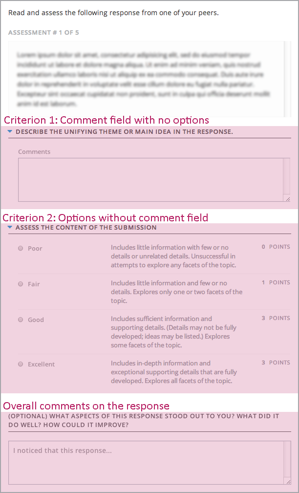

6.25.2. Create an Open Response Assessment Assignment¶
Creating an open response assessment is a multi-step process:
- Step 1. Create the Component
- Step 2. Add Prompts
- Step 3. Add the Rubric
- Step 4. Specify the Assignment Name and Response Dates
- Step 5. Select Assignment Steps
- Step 6. Specify Step Settings
- Step 7. Show Top Responses
- Step 8. Test the Assignment
Each of these steps is covered in detail below.
For more information about the components of an open response assessment, see Open Response Assessments. For information about viewing metrics and student responses for released open response assessments, see Accessing Assignment and Student Metrics.
6.25.2.1. Step 1. Create the Component¶
To create the component for your open response assessment, complete these steps.
- In Studio, open the unit where you want to create the open response assessment.
- Under Add New Component, click Problem, click the Advanced tab, and then click Peer Assessment.
- In the Problem component that appears, click Edit.
6.25.2.2. Step 2. Add Prompts¶
To add prompts, or questions, complete these steps.
- In the open response assessment component editor, select the Prompt tab.
- Add the text of your question in the text field. Replace any default text if necessary.
- Select Add a Prompt to add another prompt in the problem.
6.25.2.2.1. Add Formatting or Images to a Prompt¶
Currently, you cannot add text formatting or images inside the Peer Assessment component. To include formatting or images within the text of a prompt, you can add an HTML component that contains your text above the Peer Assessment component, and leave the text field in the Prompt tab blank. The instructions for the peer assessment still appear above the Your Response field.

6.25.2.2.2. Allow Students to Submit Images (optional)¶
To allow students to submit an image with a response, complete these steps.
- In the open response assessment component editor, click the Settings tab.
- For Allow Image Responses, select True.
Note
- The image file must be a .jpg or .png file, and it must be smaller than 5 MB in size.
- Currently, course teams cannot see any of the images that students submit. Images are not visible in the body of the assignment in the courseware, and they are not included in the course data package.
- You can allow students to upload an image, but you cannot require it.
- Students can only submit one image with each response.
- All responses must contain text. Students cannot submit a response that contains only an image.
6.25.2.3. Step 3. Add the Rubric¶
In this step, you add your rubric and provide your students with feedback options. You add one rubric for each problem, regardless of the number of prompts in the problem.
For each step below, replace any default text with your own text.
Note
All open response assessments include a feedback field below the rubric so that students can provide written feedback on a peer’s overall response. You can also allow or require students to provide feedback for individual criteria. See step 2.4 below for instructions. For more information, see Feedback Options.
To add the rubric, complete these steps.
- In the open response assessment component editor, click the Rubric tab.
- In the first Criterion section, enter the name and prompt text of your first criterion.
- In the first Option section, enter the name, explanation, and point value for the first option.
- In the next Option section, enter the name, explanation, and point value for the next option.
- Repeat step 4 for each option. If you need to add more options, click Add Option.
- Next to Feedback for This Criterion, select a value in the drop-down list.
- If you do not want students to provide feedback for this individual criterion, select None.
- If you want to require students to provide feedback, select Required.
- If you want to allow students to provide feedback, but not require it, select Optional.
- Follow the instructions in steps 2-6 to add your remaining criteria. If you need to add more criteria, click Add Criterion at the end of the list of criteria.
- Include instructions for students to provide overall written feedback on their peers’ responses. You can leave the default text in the Feedback Instructions field or replace it with your own text.
6.25.2.3.1. Provide Only Comment Fields for Individual Criteria¶
When you add a comment field to a criterion, the comment field appears below the options for the criterion. You can also provide a comment field, but no options.
In the following image, the first criterion has a comment field but no options. The second includes options, but does not have a comment field.
To provide a comment field without options, complete these steps.
- In the criterion, click Remove to remove, or delete, all the options.
- Next to Feedback for This Criterion, select Required in the drop-down list.
6.25.2.4. Step 4. Specify the Assignment Name and Response Dates¶
To specify a name for the assignment as well as start and due dates for all student responses, complete these steps.
- In the component editor, click the Settings tab.
- Next to Display Name, type the name you want to give the assignment.
- Next to Response Start Date and Response Start Time, enter the date and time when you want students to be able to begin submitting responses. Note that all times are in Universal Coordinated Time (UTC).
- Next to Response Due Date and Response Due Time, enter the date and time by which all student responses must be submitted. Note that all times are in Universal Coordinated Time (UTC).
Note
We recommend that you set the response due date and time at least two days before the peer assessment due date and time. If the response due time and peer assessment due time are close together, and a student submits a response just before responses are due, other students may not have time to perform peer assessments before peer assessments are due.
6.25.2.5. Step 5. Select Assignment Steps¶
Open response assessment assignments can include student training, peer assessment, and self assessment steps. You can include a peer assessment step before a self assessment step and vice versa.
If you include a student training step, you must include a peer assessment step. You can also include a self assessment step. The student training step must come before both the peer assessment and the self assessment step.
To add steps to the assignment:
In the component editor, click the Settings tab.
Scroll down past the Allow Image Responses field.
Locate the following headings:
- Step: Student Training
- Step: Peer Assessment
- Step: Self Assessment
Select the check boxes for the steps that you want the assignment to include.
(optional) If you want to change the order of the steps, drag the steps into the order that you want. If you include a student training step, make sure it is the first step in the assignment.
6.25.2.6. Step 6. Specify Step Settings¶
After you select the steps that you want, you can specify settings for those steps.
Note
If you make changes to a step, but then you clear the check box for that step, the step will no longer be part of the assignment and your changes will not be saved.
6.25.2.6.1. Student Training¶
For the student training step, you enter one or more responses that you have created, then select an option for each criterion in your rubric.
Note
You must enter your complete rubric on the Rubric tab before you can select options for the student training responses. If you later change one of your criteria or any of its options, you must also update the student training step.
To add and score student training responses:
- Under Step: Student Training, locate the first Scored Response section.
- In the Response field, enter the text of your example response.
- Under Response Score, select the option that you want for each criterion.
For more information, see Student Training Step.
6.25.2.6.2. Peer Assessment¶
For the peer assessment step, you specify the number of responses that each student must grade, the number of students who must grade each response, and start and due dates. All fields are required.
To specify peer assessment settings:
- Locate the Step: Peer Assessment heading.
- Next to Must Grade, enter the number of responses that each student must grade.
- Next to Graded By, enter the number of students that must grade each response.
- Next to Start Date and Start Time, enter the date and time when students can begin assessing their peers’ responses. All times are in Universal Coordinated Time (UTC).
- Next to Due Date and Due Time, enter the date and time by which all peer assessments must be complete. All times are in UTC.
6.25.2.6.3. Self Assessment¶
For the self assessment step, you specify when the step starts and ends.
- Locate the Step: Self Assessment heading.
- Next to Start Date and Start Time, enter the date and time when students can begin assessing their peers’ responses. All times are in Universal Coordinated Time (UTC).
- Next to Due Date and Due Time, enter the date and time by which all peer assessments must be complete. All times are in UTC.
6.25.2.7. Step 7. Show Top Responses¶
To allow students to see the top-scoring responses for the assignment, you specify a number on the Settings tab.
- In the component editor, click the Settings tab.
- In the Top Responses field, specify the number of responses that you want to appear in the Top Responses section below the student’s final score. If you do not want this section to appear, set the number to 0. The maximum number is 100.
Note
Because each response can be up to 300 pixels in height, we recommend that you set the number of top responses to 20 or lower, to prevent the page from becoming too long.
For more information, see Top Responses.
6.25.2.8. Step 8. Test the Assignment¶
To test your assignment, set up the assignment in your course, set the section or subsection date in the future, and ask a group of beta users to submit responses and grade each other. The beta testers can then let you know if they found the question and the rubric easy to understand or if they had any problems with the assignment.
For more information about beta testing, see 贝塔测试.